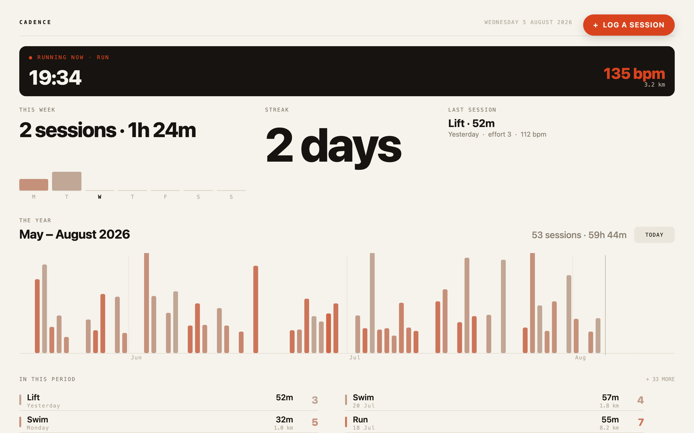
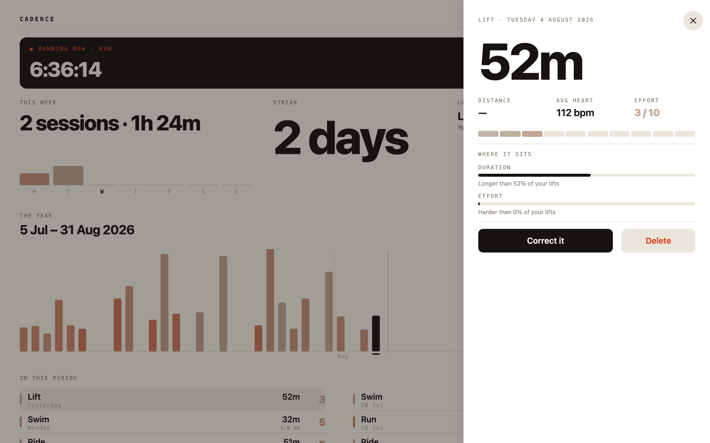
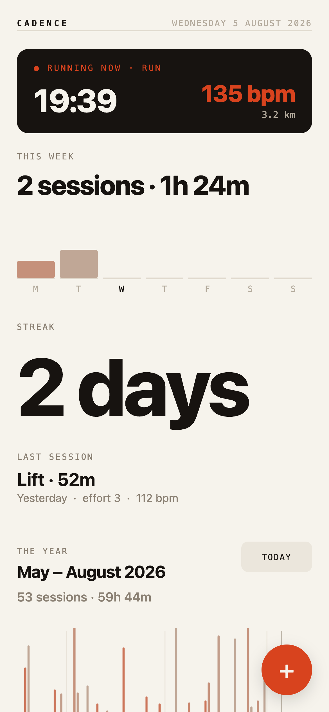
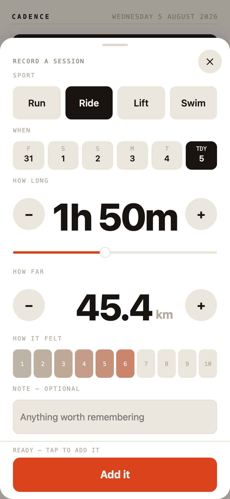

The same brief as run 1, against a materially better documentation corpus — the library reference filled in from 0 to 166 attributes, two new guide chapters, theme tokens in the model. The question this run answers is what better docs actually buy.
| Tree | Fresh clone at 2de9c3a — the build after the documentation pass |
|---|---|
| Given | The same brief.md and api/ as run 1, unchanged |
| Shape of the run | 19 minutes reading with nothing written, then the whole 1,532-line program in a single write, then ~35 minutes driving and fixing. No stall. |



phone (< 860) decides density and tap targets, wide (≥ 980) decides whether
the three answers sit in one row.
The agent confirmed the retrieval design works as intended: “declare.md for the model,
docs/guide/NN for a concept, declare-model.json for exact names — I queried the JSON
with node -e perhaps twenty times and it always answered.” It grepped rather than read whole,
which is the behaviour the residency rule asks for, and the always-loaded map did not grow by a single byte
across the documentation pass.
What the better docs did not buy is a better application. Against run 1 this program is
more ambitious — real pinch and fling through the raw touch family, a Heartbeat-carried glide,
wheel handling, a session list, edit and delete — and weaker on the brief's central design demand.
The §6 collision, which is a defect in the brief rather than the run. The brief requires the
literal copy 4 sessions · 3h 40m and that the largest number be six times the smallest text
on the same screen. This run reasoned that nineteen characters cannot satisfy both at 390px without wrapping into
illegibility, so it demoted the week line and made the streak the hero numeral. Run 1 dissolved the same tension
by setting the line as differently-sized runs — numerals large, units small — which is the better answer, but
nothing in the brief said that was permitted. Fix the brief before running this task again.
Full detail and reproductions in 2026-08-05-bugs.md.
This run produced the strongest single finding of the programme so far.
| # | Finding | Validation | Recommendation |
|---|---|---|---|
| 1 | d.w / d.h are documented, typechecked, and do not exist.
guide/06-style.md:93 promises “the view's own box”; the runtime Draw class has no such
members (w/h belong to interface Bounds, and record() builds a
Draw with no box). A drawing sized from them silently paints nothing. |
Confirmed Reproduced four ways: the doc, the runtime source, a clean R1–R4, and a two-rect render where only the literal-width rect appears. |
Fix bug Cost this run ~40 minutes. The one failure mode the language's pitch says is impossible: a documented, type-checked name that is a silent no-op. |
| 2 | input(v) on a TextInput compiles clean and never fires.
TextInput is an Editor and delivers through the event onInput(v); the docs
teach one value pattern without saying which family a component belongs to. |
Confirmed Typed “Ada”; app.who stayed "". |
Fix bug Warn on an input member declared on an Editor. It is a dead member, and the language otherwise makes that unrepresentable. |
| 3 | Set-then-fetch in one handler requests the old address. Third independent sighting,
third distinct shape — here a DELETE /api/sessions/ sent with no id. |
Confirmed | Fix bug |
| 4 | A :path inside a State leaks '$data' is not a member of State
— the same misleading diagnostic run 1 hit on Spring. |
Confirmed | Fix bug Diagnostic only. |
| 5 | Heartbeat.onFrame(dt) delivers a negative dt across a clock handover
— under settleMotion the first frame's dt was −0.72 s and an integrated fling ran backwards. |
Not reproduced Mechanism is specific; included because it affects any app integrating motion and then driven at rung 5. |
Fix bug Clamp both ends, or reset the previous timestamp on a clock-mode change. |
| 6 | inspect().attrs reports only slots that have been written, so an attribute is
undefined on a fresh load and defined after a gesture — a silent false negative in a test.
find(path).<attr> is the reliable read and nothing points there. |
Not tested | Docs update |
onWheel's coordinates are view-local while the touch family is
root-space — the gestures chapter says “coordinates are root-space throughout” about touch and
never mentions the wheel's frame; the reference has it right. And View.claim = x | y | both, the
axis-scoped drag claim, is in the reference and in the design notes but not in the gestures chapter's ownership
table — which is the page you read when deciding what to claim, and precisely the knob a “drag horizontally on a
scrolling page” case wants.